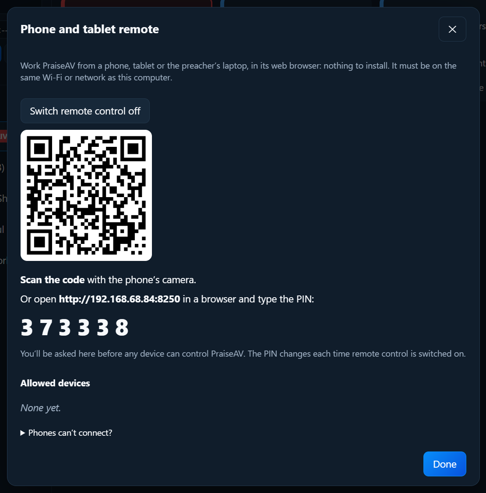
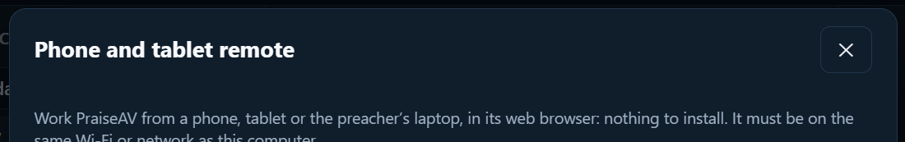
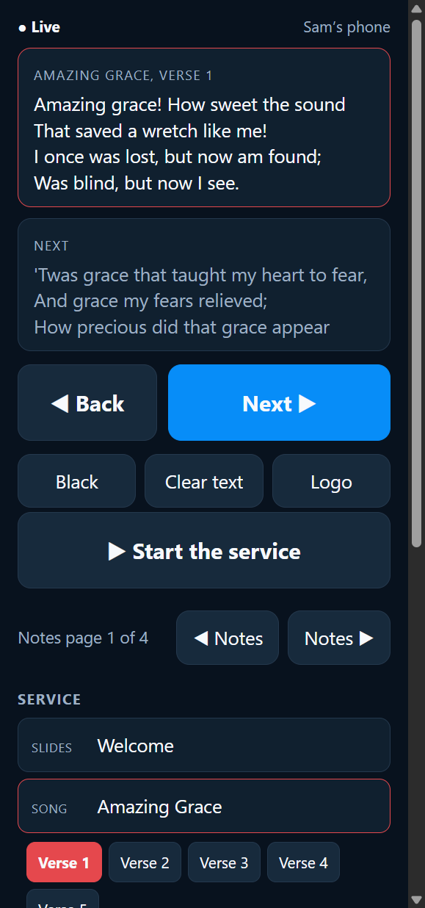
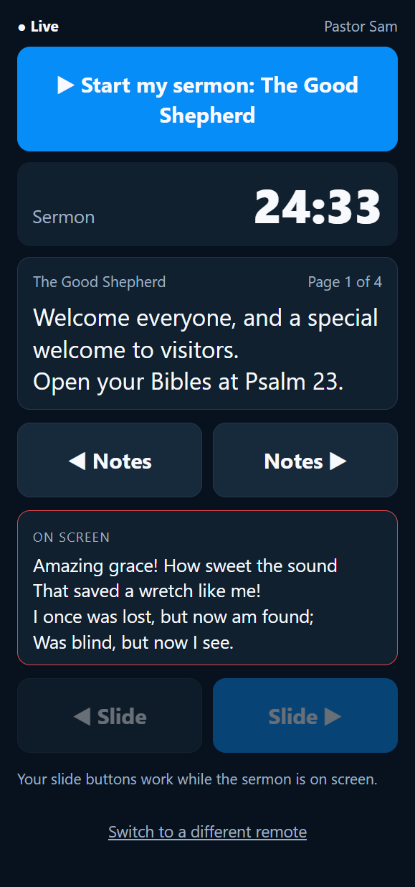

Screens and livestream
Phone and tablet remote
Anyone you allow can control PraiseAV from a phone, tablet or laptop, in its web browser. Nothing to install, and it works on Android, iPhone, iPad and laptops.
- An AV remote does what the desk does: Next, Black, Logo, any slide in the service.
- A preacher remote moves the preacher’s own slides and notes, and shows the timer.
Switching it on
- Click Remote at the top right of PraiseAV.
- Click Switch remote control on.

Connecting a phone
- The phone must be on the same Wi-Fi as the PraiseAV computer.
- Scan the code with the phone’s camera. Or type the address shown into the phone’s browser, then the PIN.
- Type a name (“Pastor Sam”) and tap Connect.
- On the PraiseAV computer, a message asks about it. Click Allow as AV remote, Allow as preacher remote, or No.

Nobody can control PraiseAV until you allow them at the desk. The PIN changes each time remote control is switched on.
Allowed devices are listed under Allowed devices. Next time, they connect straight away. Remove stops one.
The AV remote

- ◀ Back and Next ▶, big.
- Black, Clear text, Logo.
- What’s on screen now.
- The Service: tap any item, then any slide.
- For sermons: ◀ Notes and Notes ▶.
The preacher remote

- ▶ Start my sermon: puts the sermon on screen, for when there’s no one at the laptop. It shows whenever the sermon isn’t on screen.
- ◀ Slide and Slide ▶ for the congregation slides (while the sermon is on screen).
- ◀ Notes and Notes ▶, with the notes themselves on the phone or laptop.
- The timer, which turns amber and then red, like the preacher’s screen.
A preacher with a laptop on the lectern can use it as a notes screen and a clicker together.
No one free for the laptop? See Running a service without an AV volunteer.
Leading worship and preaching from one phone
Someone who leads worship and preaches (a worship leader who is also the youth pastor, say) only needs one phone, allowed once as an AV remote:
- At the bottom of the AV remote, tap ⇄ Switch to the preacher’s view for the sermon: the notes, the timer, Start my sermon and the slide buttons.
- Tap ⇄ Switch to the AV view to lead worship again and finish the service.
Switch as often as you like. There’s no pairing again, and nobody needs to go to the laptop.
A preacher remote can’t switch, so a visiting speaker can’t change the songs. To give someone more, change their phone at the laptop: Remote → Allowed devices, choose AV remote (and preacher’s view) next to their name. There’s no need to pair again.
Forget this phone (or Switch to a different remote on a preacher remote) takes the phone off the list; it then has to join again.
If the laptop’s battery is low
The remotes show Laptop battery 25%: plug it in at the top when the laptop is running low on battery.
Phones can’t connect?
- Same network: guest Wi-Fi often keeps devices apart. Use the staff Wi-Fi.
- The first time, Windows asks on the PraiseAV computer whether to allow PraiseAV on private networks: choose Allow.
- Wi-Fi with no internet: the phone may switch to mobile data. On Android, tap Stay connected when asked. On iPhone, turn mobile data off while using the remote.
- No Wi-Fi at all? Turn on the PraiseAV computer’s Mobile hotspot (Windows Settings › Network & internet) and join phones to that.